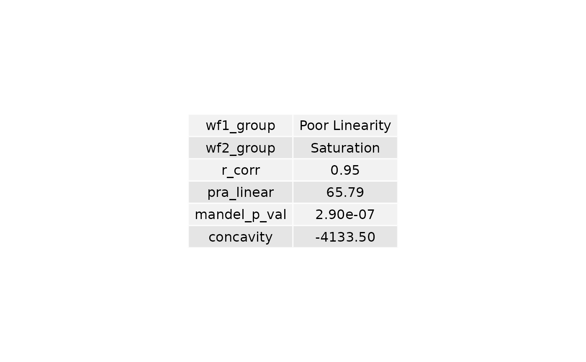

Plot dilution summary table for one group
plot_summary_table(dilution_summary_grp)A one row data frame or tibble containing dilution summary
A gridtable object consisting of two tables. One from
plot_summary_table_char() and plot_summary_table_num()
wf1_group <- c("Poor Linearity")
wf2_group <- c("Saturation")
r_corr <- c(0.951956)
pra_linear <- c(65.78711)
mandel_p_val <- c(2.899006e-07)
concavity <- c(-4133.501328)
dilution_summary_grp <- data.frame(
wf1_group = wf1_group,
wf2_group = wf2_group,
r_corr = r_corr,
pra_linear = pra_linear,
mandel_p_val = mandel_p_val,
concavity = concavity
)
table <- plot_summary_table(dilution_summary_grp)
grid::grid.draw(table)

# No column case
dilution_summary_grp <- data.frame()
table <- plot_summary_table(dilution_summary_grp)
table
#> NULL